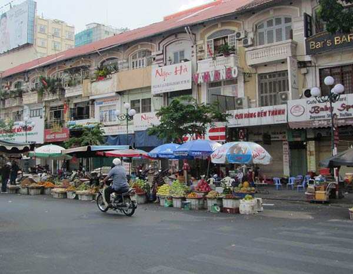

Introduction
In 1858, France began its conquest for VNM, which ended in 1884. By 1887, Vietnam was part of French Indochina. Even after Vietnam declared independence after World War II, France continued to rule the country until communist forces under Ho Chi Minh defeated them in 1954. Under the Geneva Accords of 1954, Vietnam was divided into the communist North and anti-communist South.
Throughout the 1960s, the United States supported South Vietnam both financially and militarily until a cease-fire agreement in 1973. Two years later, North Vietnamese forces overran the South reuniting the country under communist rule.
For over a decade the country experienced little economic growth because of conservative leadership policies, the persecution and mass exodus of individuals, and growing international isolation. It was only until new policy enactments in 1986 that this changed.
While the communist leaders maintain tight control on political expression, they have demonstrated some modest steps toward better protection of human rights. The country continues to experience small-scale protests, the vast majority connected to either land-use issues, calls for increased political space, or the lack of fair measures to resolve disputes. The small-scale protests in the urban areas are often organized by human rights activists, but many occur in rural areas and involve various ethnic minorities.
To find more information about Vietnam's history and current government, visit its official website at: http://chinhphu.vn/portal/page/portal/English
Geography
Natural Resources
- Antimony
- Phosphates
- Coal
- Manganese
- Rare Earth Elements
- Bauxite
- Chromate
- Offshore Oil and Gas Deposits
- Timber
- Hydropower
- Arable Land
Population Distribution
Though it has one of the highest population densities in the world, the population is not evenly dispersed. It clusters heaviest along the South China Sea and Gulf of Tonkin, with the Mekong Delta (in the south) and the Red River Valley (in the north) having the largest concentrations of people.
Land Use
| Agricultural Land | 34.8 percent |
| Forest | 45 percent |
| Other | 20.2 percent |
People and Society
Population
As of July 2020, the total population of Vietnam is 98,721,275. In comparison to the world, they rank 16th.
Ethnic Groups
54 ethnic groups are recognized by the Vietnamese government.
Ethnic group and percentages in order from most to least
- Kinh/Viet- 85.7 percent
- Tay- 1.9 percent
- Thai- 1.8 percent
- Muong- 1.5 percent
- Khmer- 1.5 percent
- Mong- 1.2 percent
- Nung- 1.1 percent
- Hoa- 1 percent
- Other- 4.3 percent
Languages
Although Vietnamese is the official language of Vietnam, many others are spoken there.
- English
- French
- Chinese
- Khmer
- Mountain Area Languages
Economy
Overview
Vietnam is a densely populated developing country that has been transitioning since 1986 from the rigidities of a centrally planned, highly agrarian economy to a more industrial and market-based economy. Vietnam exceeded its 2017 GDP growth target of 6.7 percent with growth of 6.8 percent, primarily due to unexpected increases in domestic demand, and strong manufacturing exports.
Vietnam has a young population, stable political system, commitment to sustainable growth, relatively low inflation, stable currency, strong FDI inflows, and strong manufacturing sector. In addition, the country is committed to continuing its global economic integration.
To continue its trajectory of strong economic growth, the government acknowledges the need to spark a ‘second wave’ of reforms, including reforming state-owned-enterprises, reducing red tape, increasing business sector transparency, reducing the level of non-performing loans in the banking sector, and increasing financial sector transparency. Vietnam’s public debt to GDP ratio is nearing the government mandated ceiling of 65 percent.
Overall, the country’s infrastructure fails to meet the needs of an expanding middle class. Vietnam has demonstrated a commitment to sustainable growth over the last several years, but despite the recent speed-up in economic growth the government remains cautious about the risk of external shocks.
Gross National Saving
| Percentage of GDP | Year |
|---|---|
| 29 percent | 2017 |
| 29.5 percent | 2016 |
| 27.5 percent | 2015 |
Industries
- Food
- Processing
- Garments
- Shoes
- Machine-building
- Mining
- Coal
- Steel
- Cement
- Chemical
- Fertilizer
- Glass
- Tires
- Oil
- Mobile Phones